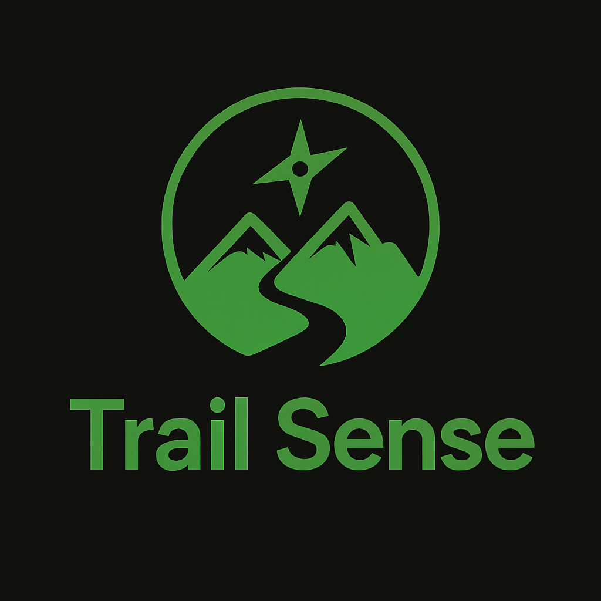
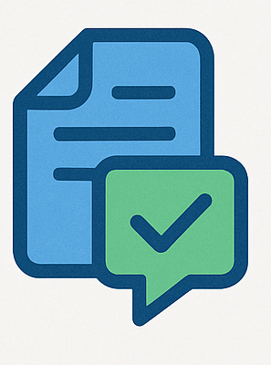
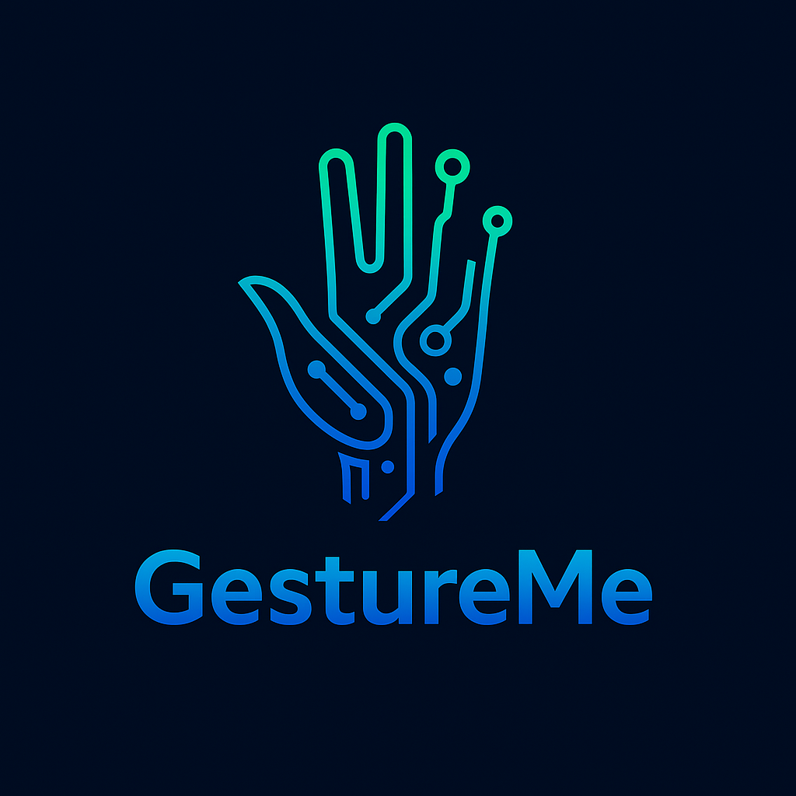
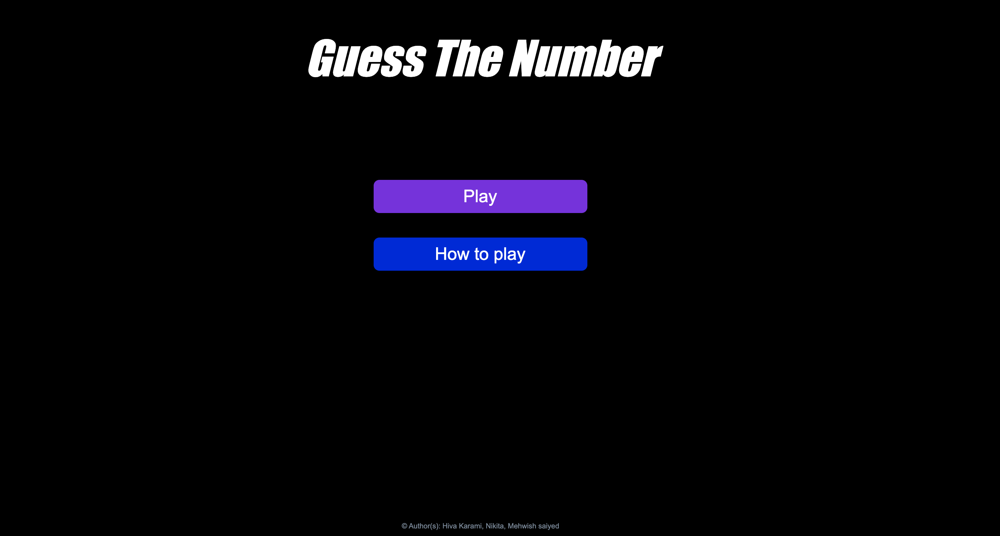

About Me
As a Honours BSc student in Computer Science at Lassonde School of Engineering, York University, I am developing a solid foundation in software development and cybersecurity. I'm a Computer Science student at York University with a passion for technology, data, and design. My expertise spans software development, data analytics, and IT systems, with hands-on experience using Python, javascript, SQL, and Power BI. I enjoy solving technical challenges, optimizing workflows, and creating user-friendly digital solutions that make a real impact. I combine strong analytical thinking with creative problem-solving to bridge the gap between engineering, data, and design.
Moving to Canada to study was one of the most transformative decisions of my life — it required courage, independence, and a resilience I didn't know I had. Growing up, my family emphasized education and self-discipline. I was encouraged to be curious, critical, and rooted in faith and reflection. There were periods of homesickness and anxiety, but those valleys became turning points that taught me flexibility and empathy. I chose York University and Lassonde because of their emphasis on innovation and practical application — and I've grown more here, personally and professionally, than I ever expected.
My Artifact: Bracelets from Home
A pair of bracelets gifted to me by my mother and sister. Although simple, they hold deep emotional value. My mother represents patience, sacrifice, and unconditional love. My sister is my mentor and role model. Wearing these reminds me of their guidance and belief in me — and motivates me to stay resilient, grounded, and grateful in everything I pursue.
Why Me
My Story
Hi, I'm Nikita Gogia — a third-year Computer Science student at York University's Lassonde School of Engineering, currently on co-op as an IT Technician at Kinectrics, graduating in 2027.
A few years ago, I made the biggest decision of my life: I left everything familiar behind in India and moved to Canada, alone. There were moments of real fear — homesickness, academic pressure, and the quiet challenge of building belonging from scratch. But those valleys became my turning points.
"Technology should not only solve problems — it should help people."
That belief was born from experience. I know what it feels like to be overwhelmed and need clear, patient guidance. It's why I built ClickShield to protect vulnerable users online, why I approach every IT support ticket with empathy first, and why my deepest goal is to build cybersecurity tools that serve people — not just systems.
My mother taught me that real leadership is quiet, consistent, and for others. I carry that into every project, every team, and every line of code I write. That's really why I do what I do.
Let's ConnectVideo Introduction
Add your Why Me video here once recorded.
In YouTube: Share → Embed → copy the <iframe> code and paste it here to replace this placeholder.
Career & Education
— Experience —
Jan 2026 – Present
IT Technician Co-op
Kinectrics (a BWXT company) · Toronto, Canada
- Resolve hardware and software support tickets — password resets, software installs, printer issues, and device configuration — using ServiceNow
- Manage user accounts and permissions in Active Directory; track device assets via Lansweeper
- Independently diagnosed a recurring Windows app installation failure traced to a Microsoft file integrity issue that the wider team could not solve
- Document all troubleshooting steps and resolutions with clear ticket summaries for team knowledge-sharing
- Communicate technical information clearly to employees of varying technical backgrounds
// reflection
This placement taught me that technical ability is only half the job. The other half is communication — making a frustrated user feel heard and supported while you solve their problem. I became more confident, more independent, and significantly better at explaining complex issues simply. Most importantly, I learned that I can adapt to unfamiliar professional environments and come out stronger. This is where my academic knowledge became real-world skill.
— Education —
Sep 2023 – Apr 2027 (Expected)
BSc Computer Science (Honours)
York University, Lassonde School of Engineering · Toronto, Canada
- Specialization in software development and cybersecurity
- Relevant coursework: Data Structures & Algorithms, Operating Systems, Computer Networks, EECS 2100 (Digital Circuits & Logic)
- Active co-op student through the Lassonde Engineering Co-op program
Full resume available on request — replace this with a direct PDF link once uploaded.
Goals & Reflections
Competency 1 — Critical Thinking & Problem-Solving
Both my co-op role and my coursework require structured, independent reasoning. As an IT Technician, I cannot always rely on others — I must analyze issues carefully, test systematically, and find the most effective solution on my own. Strengthening this competency helps me become more confident in my analytical abilities.
S.M.A.R.T. Goal — Co-op
By April 2026, resolve at least 50 IT support tickets involving hardware, software, and network problems — documenting the root cause and solution for each, and meeting with my supervisor at least three times for feedback on my problem-solving approach.
S.M.A.R.T. Goal — Academic
By April 2026, improve logical reasoning in EECS 2100 by completing all weekly practice problems, attending at least two office hours sessions, and reviewing all graded work within 48 hours to understand and correct mistakes.
// reflection
The most valuable lesson from this placement: troubleshooting isn't about memorized steps — it's about understanding systems logically. The moment I stopped asking "what do I do?" and started asking "why is this happening?" was when I became genuinely useful. My confidence in independent problem-solving has grown substantially, and I resolved far more than 50 tickets.
Competency 2 — Agility & Adaptability
Balancing work and academics requires constant flexibility and resilience. Working at Kinectrics exposed me to new systems and professional expectations that are completely different from the classroom. Adapting quickly to change is essential for my future — and something I've learned is possible even when uncomfortable.
S.M.A.R.T. Goal — Co-op
By the midpoint of my work term, effectively use at least one new enterprise system (Active Directory or ServiceNow) and complete all assigned tasks independently — demonstrating adaptability through consistent, on-time delivery.
S.M.A.R.T. Goal — Academic
By April 2026, balance co-op and EECS 2100 responsibilities by maintaining a structured weekly schedule — submitting all assignments on time while responding to assigned workplace tickets within 24 hours.
// reflection
I learned Active Directory, ServiceNow, and Lansweeper while managing university coursework. There were weeks where it felt impossible — but I created structure where there was none, and learned to ask for help before small issues became crises. As an international student, unfamiliar situations used to slow me down. Now they're something I lean into.
Competency 3 — Communication Skills
Strong communication is essential in both professional and academic environments. At Kinectrics, I explain technical issues to users with no technical background. Developing this competency helps me articulate my ideas confidently and professionally — a skill that will serve me throughout my career in technology.
S.M.A.R.T. Goal — Co-op
By April 2026, ensure 100% of IT support tickets I handle include clear summaries of the issue, troubleshooting steps taken, and final resolution — requesting supervisor feedback on at least three written communications during the term.
S.M.A.R.T. Goal — Academic
By April 2026, improve academic communication in EECS 2100 by writing structured, logically organized proofs and seeking specific feedback from my professor when clarification is needed.
// reflection
Communication was the most unexpected area of growth in my co-op. A frustrated user needs empathy before they need a solution. Listening actively, reassuring calmly, and explaining simply became as natural as the technical troubleshooting itself. This changed how I think about what it means to be a good technologist — it's not enough to solve the problem, you have to make the person feel taken care of throughout.
Future Aspirations
Cybersecurity Career
Build a career in cybersecurity — starting with threat detection and AI/ML security applications, eventually leading cross-functional tech teams protecting organizations at scale.
Launch a Product
Build and launch a cybersecurity-focused startup or product — growing from the accessibility problem I explored with ClickShield into something genuinely impactful.
Digital Rights Advocacy
Contribute to public policy or digital rights advocacy around data privacy — bridging my technical expertise with the human stakes of how data is used and protected.
Extracurriculars
Graphic Designer – York University Data Science Club
Sep 2025 – Present
Design social media graphics, event banners, and presentation visuals using Figma and Adobe tools, working closely with the communications team to boost event engagement.
Finance Committee Chair – Funding & Grants, Lassonde Student Council
Sep 2024 – Present
Support funding and grants initiatives while creating impactful visual assets for campaigns and presentations, collaborating with the communications team to increase visibility and participation.
PROJECTS

TrailSense
TrailSense is a natural language video search engine for mountain biking trails. Riders describe the vibe they're chasing, like "fast desert trail with berms". TrailSense provides the best matching trail closest to user, alongside a bunch of related info, like the difficulty rating, terrain type, and location. It's built for both discovery and contribution: a crowdsourced footage model allows anyone to upload trail videos, turning their GoPro footage into searchable trail insights for the entire community.
💡 This project pushed me to prioritize user experience above everything else. Shifting from "does it work?" to "does it feel right?" was a major moment in my growth as a developer — and a question I now bring to every project I build.
InventoryTracker
Inventory Tracker is a real-time inventory tracking app designed for food production units to cut down on waste and improve efficiency. It keeps tabs on raw material usage during production and sends smart Firebase alerts to prevent stockouts—helping reduce them by 70%. With everything tracked and logged, the system helped reduce material waste by 30% and gave teams full visibility into their inventory.
💡 Building something with a measurable real-world impact — reduced waste, smarter production — showed me that software can be an environmental and social tool. I want to keep building things that matter beyond the screen.

GotIT
GotIT is a smart, responsive Streamlit web app that leverages AI and NLP to help job seekers tailor their resumes for specific roles. Users can upload a PDF resume and paste a job description to receive a semantic match score powered by BERT embeddings and Sentence Transformers. The app highlights matched vs. missing keywords and delivers GPT-generated personalized suggestions.
💡 As an international student who has navigated job applications myself, building a tool that demystifies resume matching felt personal. It deepened my understanding of NLP in practical application.

GestureMe App
GestureMe is a mobile application that leverages Artificial Intelligence and Computer Vision to enable hands-free control of smart devices using natural hand gestures. Built with Flutter and integrated with TensorFlow Lite and MediaPipe-style hand landmark models, this app allows users to interact with their devices through real-time gesture recognition via the camera.
💡 This project introduced me to the intersection of AI, mobile, and accessibility — and reinforced my commitment to building inclusive technology for users who interact with the world differently.

Guess the Number
Designed and developed a responsive number-guessing game using HTML, CSS, and JavaScript. Built server-side logic with Node.js and Express, enabling real-time gameplay and leaderboard tracking with MySQL. Enhanced user experience with multiple difficulty levels and optimized performance through automated testing and debugging for seamless cross-platform compatibility.
💡 One of my first full-stack builds — it gave me a complete picture of how the different layers of a web application connect, from front-end interaction to the database.
ClickShield
ClickShield is a Google Chrome extension designed to help users identify phishing, fraud, or scam websites in real time. This extension leverages an AI-powered backend hosted via Flask, which provides personalized results on whether a website is safe or not. The core functionality is powered by Google Safe Browsing API, ensuring reliable data for web safety checks. Received shoutout from TD Bank for the impact on protection against fraud.
💡 Built for the people most targeted by online scams — those least equipped to spot them. Designing accessibility features for elderly users challenged me to think far beyond code quality, to the human being on the other side of the screen.